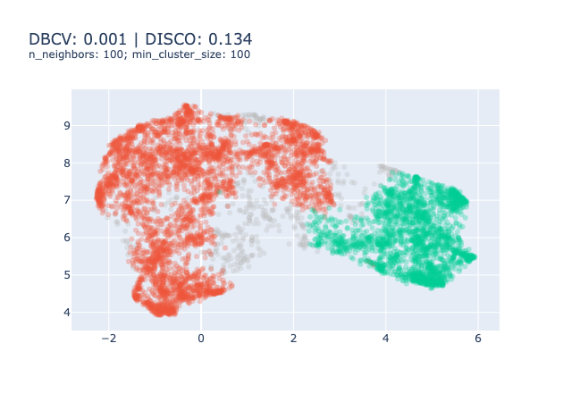

Techy Notes
Curations of the original dataset
- select only thesis defended between 2010 and 2022, since information before that time is of lower quality
- select thesis where both resumes in english and french exist, as well as the oai code (correspond to the field of the thesis, see oai_codes.csv in the Zenodo project). (about 37% of the dataset remains, representing about 166k rows).
- aggregate the topics (sujets rameaux) together under a single column (previously 53 (!!!))
- check that the provided resume under the english column is written in english, and the resumes under the french column are written in french. If the english version is in the french column and vice-versa, swap them.
- Finally, only select the rows where the resumes in english are in english and the resumes in french are in french. (36% of the original dataset, representing about 164k rows)
- Add an index to the dataset
Reduce outliers strategies
As described in the documentation, there are four ways of reducing the number of outliers, ie assigning documents to existing groups. The strategies are listed below
- “probabilities”: HDBSCAN can compute (if you set
calculate_probabilities=True) the probability of each document to belong to each topic. A document is assigned the most likely group, given this definition. - “distributions”: Use the topic distributions, as calculated with
approximate_distributionto find the most frequent topic in each outlier document. - “c-tf-idf”: compute the c-TF-IDF representation of each outlier document (ie sparse representation) and assign the document to the group sharing the highest similarity.
- “embeddings”: find the best matching topic using cosine similarity between the outlier document’s embedding (dense representation) and the topic centroid (ie the mean of the document’s embedding inside a group).
We recommend using the “embeddings” as using embeddings offer the richest representation and it is more coherent with NLP tasks.
UMAP and HDBSCAN parameter despcription
| Parameter | Description | Increase | Decrease | Recommendations |
|---|---|---|---|---|
⭐️n_neighborsdefault 15 |
This parameter defines what’s considered as “close”. 1 | Focus on the global structure (broad topics) | Focus on local structures (very specific topics) | Start with a rather large value and reduce incrementally until obtaining the desired level of topics specificity |
min_distdefault 0.0 |
This parameter is “essentially aesthetic”, low values will create denser clusters | Keep min_dist=0.0 |
||
n_componentsdefault 5 |
Defines the number of dimensions of the output space. | Maintain richer representations. | Flatten the representations. | Start with n_components=5.Increase when the topic model does not grasp semantic subtelties Decrease when the topic model focuses on non-essential disparities of your corpus. |
metricsdefault cosine |
This parameter defines the metric used to quantify the similarity between 2 vectors | For NLP tasks, we use the cosine metric |
| Parameter | Description | Increase | Decrease | Recommendations |
|---|---|---|---|---|
⭐️min_cluster_sizedefault 10 |
The minimum number of elements in a group to be considered a cluster, otherwise, it’s considered as noise | Generate few large and generic groups. | Generate many small and highly specific groups. | Start with a rather large value and reduce incrementally until obtaining a fine grained topic model2 |
min_samplesdefault None |
The number of samples in a neighbourhood for a point to be considered as a core point | The algorithm is conservative, only large groups will remain. | Allow for small groups. | In our experience, tuning min_cluster_size and leaving min_samples = min_cluster_size is enough for most cases3. |
metricsdefault eucidean |
This parameter defines the metric used to quantify the distance between 2 docs | The metric should not me switched to cosine because we are not working in the embedding space anymore. |
Instances file size and content
| filename (size) | definition | save_ctfidf = False |
|---|---|---|
config.json(~0.3 KB) |
parameters necessary to recreate the BERTopic instance | ✅ |
topics.json(~150 KB) |
file containing the topic representations (keywords), a list with the topics associated to each document, topic sizes, mapper[^5] and labels | ✅ |
topic_embeddings.safetensors (~350 KB) or topic_embeddings.bin (~450 KB) |
the embeddings of the centroids of each topic. shape : \((n_{topics}\times dim_{embeddings})\) |
✅ |
ctfidf_config.json (~2.1 MB) |
The configuration to recreate the weighting scheme object (ClassTfidfTransformer) and the vectorizer model (CountVectorizer) including the stop words and the vocabulary with the number of occurrences for for each element. |
❌ |
ctfidf.safetensors (~4 MB) or ctfidf.bin (~4 MB) |
the c-TF-IDF representations, a topic x n-grams table. shape: \((n_{topics}\times n_{n-grams})\) |
❌ |
Note: the sizes provided correspond to a vectorizer model only counting unigrams. If you account for the bigrams, the size of the files grows exponentially.
Clustering metrics
One could choose to focus on evaluating the clustering model to tune the HDBSCAN and UMAP parameters. There exist many metrics for evaluating clustering models that you can find on the scikit-learn website. However, amid the 9 presented, 4 require a ground truth that we don’t have4, 3 are ill-suited to HDBSCAN clustering5 and the two last are good metrics to be optimised.
Hence, we need to find metrics that are relevant to the density-based clustering models such as the DBCV Index (Moulavi et al., 2014)6 or the DISCO index (Beer et al., 2025).
In our experience, optimising these metrics results in a sub-optimal solutions as illustrated bellow.



We don’t really recommend using clustering metrics to evaluate your topic model.
Topic representation metrics
Some other metrics assess whether the representations (ie the top \(n\) words) are good representations of their groups. These metrics fall into the category of Coherence metrics (Röder et al., 2015) and they rely on a reference corpus to estimate how likely words are to be found together. Multiple metrics exist such as \(C_{UCI}\), \(C_{UMass}\) or \(C_V\), and differ from their formulation, but all follow the same structure depicted in Figure 1. This framework includes a “Reference Corpus” to evaluate the probability of two words appearing together.
These scores were often used to optimise the number of topics for LDA techniques but not to compare two topic models. Also, these metrics do not correlate well with experts’ opinions as explained in the section 5.2.

If you wanted to implement them, an easy way around is to use the Gensim library and the CoherenceModel object. For reference, we provide some examples of topic models and evaluation, we have not qualitatively evaluated these topic models, apart from Figure 2 which is presented in Section 4.2.


Bibliography
Beer, A., Krieger, L., Weber, P., Ritzert, M., Assent, I., & Plant, C. (2025). DISCO : Internal Evaluation of Density-Based Clustering (No. arXiv:2503.00127). arXiv. https://doi.org/10.48550/arXiv.2503.00127
Campello, R. J. G. B., Moulavi, D., & Sander, J. (2013). Density-Based Clustering Based on Hierarchical Density Estimates. Dans J. Pei, V. S. Tseng, L. Cao, H. Motoda, & G. Xu (Éds.), Advances in Knowledge Discovery and Data Mining (Vol. 7819, p. 160‑172). Springer Berlin Heidelberg. https://doi.org/10.1007/978-3-642-37456-2_14
Moulavi, D., Jaskowiak, P. A., Campello, R. J. G. B., Zimek, A., & Sander, J. (2014). Density-Based Clustering Validation. Proceedings of the 2014 SIAM International Conference on Data Mining, 839‑847. https://doi.org/10.1137/1.9781611973440.96
Röder, M., Both, A., & Hinneburg, A. (2015). Exploring the Space of Topic Coherence Measures. Proceedings of the Eighth ACM International Conference on Web Search and Data Mining, 399‑408. https://doi.org/10.1145/2684822.2685324
Footnotes
“represents some degree of trade-off between fine grained and large scale manifold features” (McInnes et al., 2018, p23).↩︎
Rand index, Mutual Information based scores (NMY and AMI), Homogeneity, completeness and V-measure and Fowlkes-Mallows scores.↩︎
Silhouette Coefficient, Calinski-Harabasz index and Davies-Bouldin Index. All are designed to evaluate centroïd-based clustering models (vs density-based clustering models such as HDBSCAN) such as k-Means. This means that the score is generally higher for convex clusters (round-shaped) which we don’t necessarily want.↩︎
The index was designed by the same team that designed HDBSCAN (Campello et al., 2013)↩︎